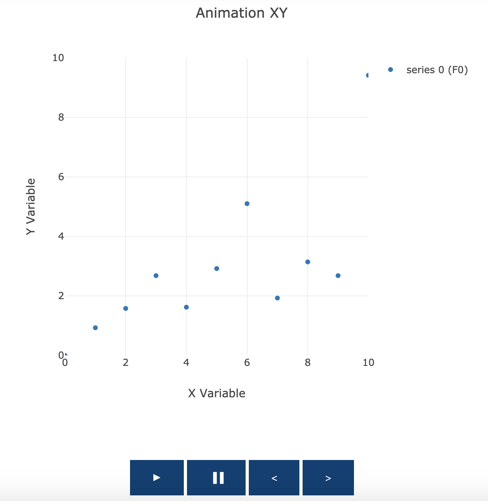
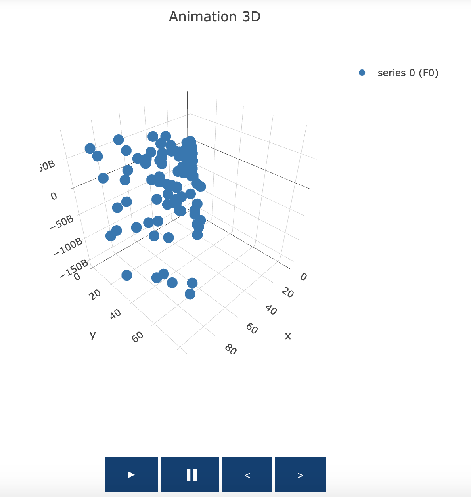

All plots can be animated as a sequence of frames
Introduction
In Picta plots can be animated as a sequence of frames.
In order to do this we pass in a list of series frames to the Chart component, then set animated=true in the Canvas component.
Imports
Here we import the necessary items to construct these examples.
import org.carbonateresearch.picta._
import org.carbonateresearch.picta.options.ColorOptions._
2D Animated Chart
// creates random XY series for testing purposes
def createXYSeries[T: Color]
(numberToCreate: Int, count: Int = 0, length: Int = 10): List[XY[Int, Double, T, T]] = {
if (count == numberToCreate) Nil
else {
val xs = List.range(0, length)
val ys = xs.map(x => scala.util.Random.nextDouble() * x)
val series = XY(x = xs, y = ys, name = "series " + count).drawMarkers
series :: createXYSeries(numberToCreate, count + 1, length)
}
}
val xaxis = Axis(X, title = "X Variable") setLimits (0.0, 10.0)
val yaxis = Axis(Y, title = "Y Variable") setLimits (0.0, 10.0)
// we can also specifiy the underlying layout directly - sometimes this can be useful
val layout = ChartLayout("Animation XY") setAxes(xaxis, yaxis)
val series = createXYSeries(numberToCreate = 50, length = 30)
val chart = Chart(animated = true, transition_duration=100) setChartLayout layout addSeries series
chart.plotInline
This will generate a plot that looks like the one below:

3D Animated Chart
// creates random XYZ series for testing purposes
def createXYZSeries(numberToCreate: Int, count: Int = 0, length: Int = 10): List[XYZ[Int, Double, Double]] = {
if (count == numberToCreate) Nil
else {
val xs = List.range(0, length)
val ys = xs.map(x => scala.util.Random.nextDouble() * x)
val zs = xs.map(x => scala.util.Random.nextDouble() * x * scala.util.Random.nextInt())
val series = XYZ(x = xs, y = ys, z = zs, name = "series " + count, `type` = SCATTER3D).drawMarkers
series :: createXYZSeries(numberToCreate, count + 1, length)
}
}
val series = createXYZSeries(numberToCreate = 10, length = 100)
val layout = ChartLayout()
val chart = Chart(animated = true) setTitle "Animation 3D" addSeries series
chart.plotInline
This will produce the following plot:

Animating Multiple Series
For both types of charts, we can also animate multiple series.